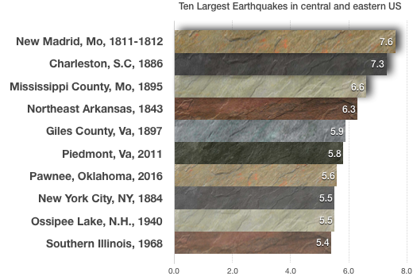
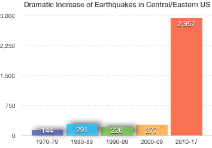

Did you feel it? Vibrations travel increasingly eastward lately
Why are earthquakes of a magnitude 3.0 and above in the central and eastern US more frequent now than they have ever been?
On the morning of June 20, 2017 an earthquake hit the City of Augusta in Georgia. According to the U.S. Geological Survey, it was centered 3.27 miles (5.26 km) southwest of Augusta with a 3.2 magnitude. Local residents reported the earthquake displaced furniture in homes and triggered security alarms at homes and businesses while Mayor Hardie Davis issued a statement urging residents to be mindful of falling debris and to take refuge under a strong structure if the ground begins to shake. It has so far been Georgia’s largest earthquake this year.

And for anyone who thought earthquakes were a West Coast thing, the 2011 5.8 magnitude quake centered in rural Virginia was an eye opener. The tremors were felt as far away as Toronto, led to the evacuation of government buildings in Washington, D.C., suspension of takeoffs and landings at airports across the Northeast; and the automatic shutdown of two nuclear reactors in Virginia near the epicenter, according to reports.

It was among the major earthquakes on the East Coast of all times, with the second largest being an estimated 7.3 magnitude temblor that struck Charleston, S.C., in 1886.

Earthquakes have increased almost tenfold in the last decade
But according to USGS, the number of earthquakes in the central and eastern United States has dramatically increased over the past decade. For that reason it has asked for additional federal resources of at least $1.5 million per year (on top of already allocated $2.5 million) that will be used to support operations of the existing stations, to integrate data from these stations into existing data analysis procedures and to further improve strong-motion station average. The goal is to increase understanding of seismic danger and societal risk in the eastern half of the US.
It is indicative that the number of earthquakes has increased by 967% during the current decade compared with the previous one.

Greeks have long had a love affair with cars
Prior to the economic crisis Greece was among the top 5 countries on earth in the consumption of private vehicles per capita reflecting its citizens' lust for the wheel even if that meant they had to be deprived of other goods. Only Canada, Ireland, Norway and Denmark surpassed Greece up until 2009. In fact, Greeks used to buy more of cars per capita than many of their European neighbors.

But when the economy collapsed, the country became a vast graveyard of abandoned automobiles. In the last few days of each year, many people line up to turn in their license plates in advance of a new tax on cars that the government typically always allows the deadline to stretch into the new year.

But this development didn't mean Greeks necessarily drove less. It's more likely that during the years that followed, roads got filled mostly with used cars which in many cases haven't been properly repaired as Greeks have been trying to avoid maintenance costs.
According to a February 2017 Kathimerini newspaper report, public organizations keep in use vehicles that should have been scrapped years ago. It is indicative that most ambulances of the National Health System are hardly operational and in many cases they break down on the road carrying a patient. The same applies to Greece’s public transportation fleet, amounting to a total of 2,000 buses. Public transportation officials say that about 1,000 of them are worn out beyond repair due to rust and serious engine problems. The average age of public buses is 13 years, as 40% of the fleet started running between 1998 and 2002. Greek police vehicles are no exception. The total fleet of Hellenic Police consists of about 12,700 vehicles, including motorcycles and about half of them are not operational.
Is Greece maybe underinvesting in road infrastructure?
But not spending money on a new vehicle fleet seems to be going hand by hand with an underinvestment tendency in infrastructure. A new dataset from OECD with figures about road infrastructure in various countries sheds further light on the increasing lack of investments in this field. Europe's low investment rate has apparently left its infrastructure creaking and Greece hasn't been an exception. The country is clearly trailing in the corresponding list in which China, the US, Japan and only Germany from Europe have secured a front seat.

Actually, the infrastructure investment gap is between 0.8 percent of GDP (against the European average) or 1.4 percent of GDP (against historical performance) translating into 1.1% or € 2bn new spending per year.
Railway infrastructure: Do Greeks have a real alternative to driving?
Based on data from the OECD we draw the conclusion that investments in railway infrastructure are also declining in Greece after the 2004 Olympics. That seemingly doesn't give an incentive to Greeks to abandon their deep rooted preference to a private vehicle, which increases the risk of fatal accidents given the fact that new investments in roads are also, not at the level they should be.

In January 2017, Greece wrapped up the sale of its struggling rail operator TrainOSE to Italy’s state railway company as the country’s government came under pressure from bailout lenders to accelerate its privatization program. The sale to Ferrovie dello Stato Italiane will bring in only €45m but estimates are it completes a series of infrastructure sales to international investors that will boost Greece’s role as a transport and tourism hub for the eastern Mediterranean.
EU invests in major growth-enabling infrastructure in Greece
In March 2017 the EU announced that over €1.3 billion of Cohesion Policy funds will be invested in ten broadband, transport and environmental projects in Greece. More specifically, €377 million will be directed to urban public transport systems in Athens and the region of Attica, over €730 million to the extension of the metro in Thessaloniki, while almost €50 million to sustainable mobility in the Peloponnese peninsula, in the south of Greece. Lastly, €92 million will be invested to achieve better connectivity in the North of Greece.
But could there be a positive takeaway from the dire findings? Apparently yes, says the PwC report, according to which infrastructure investments in Greece have an economic multiplier of around 1.8x. That means it can boost demand of other sectors and lead Greek economy to growth. This measurement specifically indicates that for every euro spent on infrastructure, GDP is further increased by €0.8.